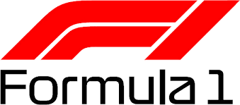

Formula One (F1) is the highest class of worldwide racing for open-wheel, single-seater
The FIA Formula One World Championship has been one of the world's premier forms of formula racing
cars sanctioned by the Fédération Internationale de l'Automobile (FIA).
motorsport since its inaugural running in 1950 and is often considered to be the pinnacle
of motorsport. The word formula in the name refers to the set of rules all participant cars
must follow. A Formula One season consists of a series of races, known as Grands Prix.
Grands Prix take place in multiple countries and continents on either purpose-built
circuits or closed roads.A points scoring system is used at Grands Prix to determine two
annual World Championships: one for the drivers, and one for the constructors—now synonymous
with teams. Each driver must hold a valid Super Licence, the highest class of racing
licence the FIA issues, and the races must be held on Grade One tracks, the highest grade
rating the FIA issues for tracks.Formula One cars are the world's fastest regulated
road-course racing cars, owing to high cornering speeds achieved by generating large
amounts of aerodynamic downforce, most of which is generated by front and rear wings,
as well as underbody tunnels. The cars depend on electronics, aerodynamics, suspension,
and tyres. Traction control, launch control, automatic shifting, and other electronic
driving aids were first banned in 1994. They were briefly reintroduced in 2001 but were
banned once more in 2004 and later 2008.With the average annual cost of running a
team—e.g., designing, building, and maintaining cars; staff payroll; transport—at
approximately £193 million as of 2018, although the cost cap stands at US$135 million.
Formula One's financial and political battles are widely reported. The Formula One Group
is owned by Liberty Media, which acquired it in 2017 for US$8 billion. The United Kingdom
is the hub of Formula One racing, with six out of the ten teams based there.
